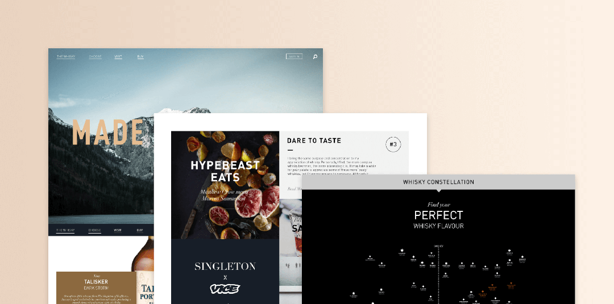
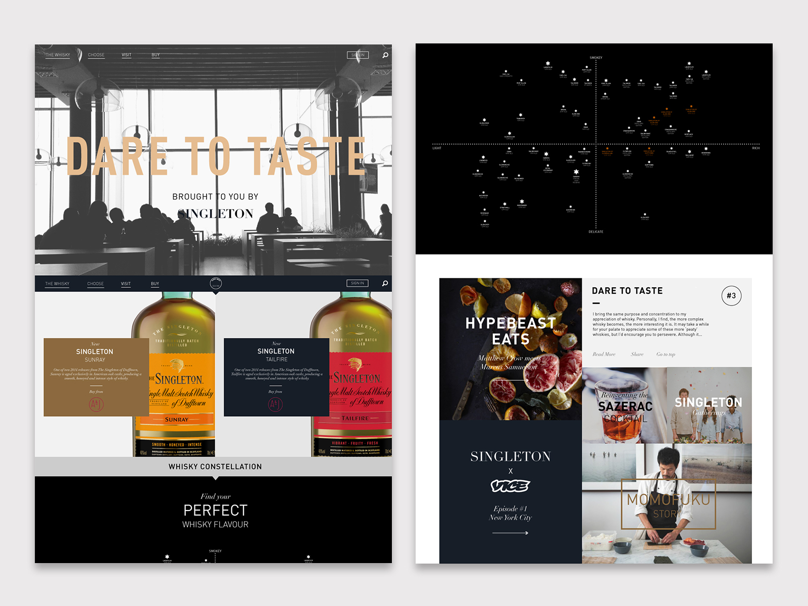

The Classic Malts Collection is a selection of some of Scotland's 13 premium single malt Whiskies. Our task was to bring these 13 whiskies together under a single brand and create a space where users can easily find out information about each brand. We rebranded Classic Malts and helped to design a new web presence along with an in-depth content strategy.

